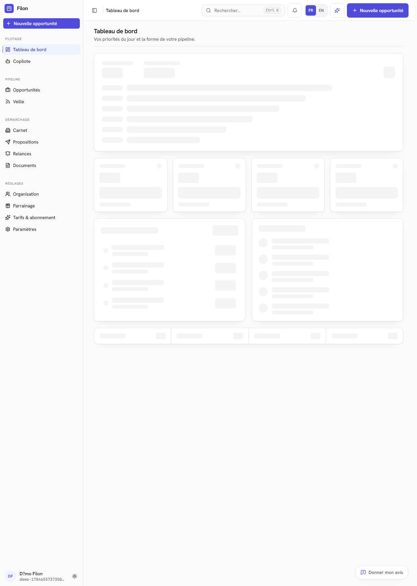
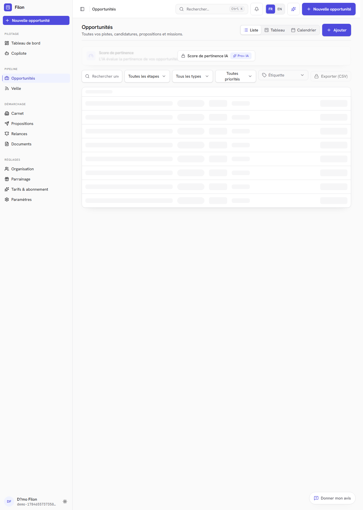
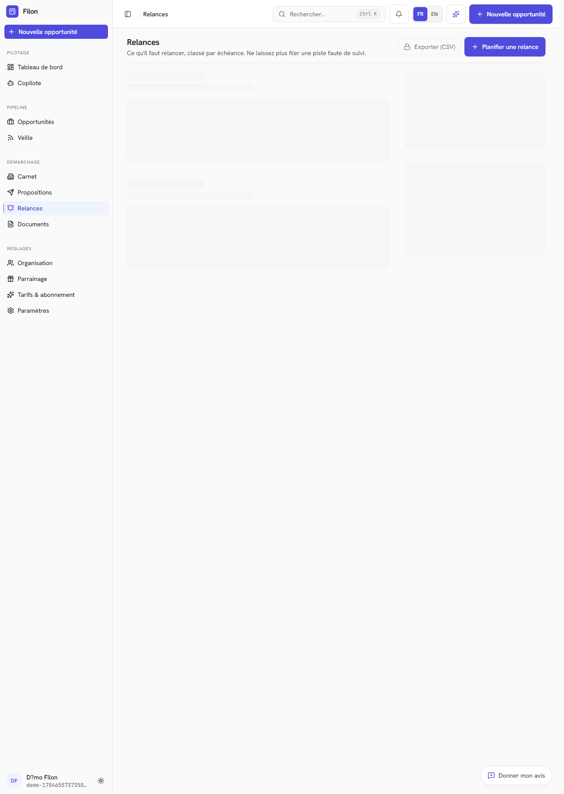
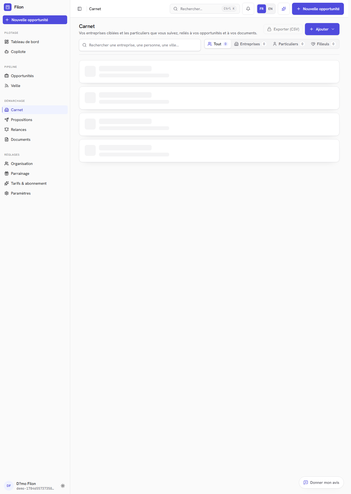
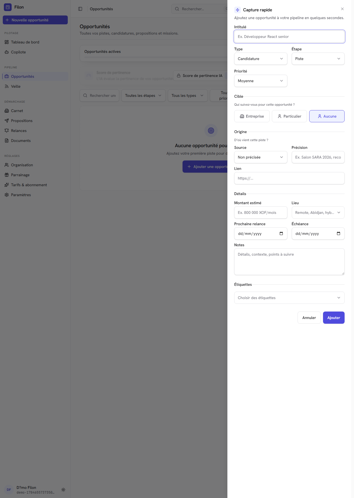

Filon
Document confidentiel · Pour validation
Note de validation de la refonte produit
Transformation de Filon en système personnel de suivi relationnel, avant engagement du développement.
01 · Décision demandée
Valider une transformation du cœur produit.
La décision demandée ne porte pas sur l'ajout de quelques fonctionnalités. Elle porte sur un nouveau modèle d'usage, une nouvelle architecture de l'information et une nouvelle promesse commerciale.
Autoriser la conception détaillée et le développement progressif de la nouvelle boucle Filon, sous réserve des observations consignées par la hiérarchie et l'expert.
23
Décisions validées
Positionnement, modèle métier, navigation, IA, prix, migration et gouvernance.
08
Vagues de livraison
Chaque vague produit un résultat utilisateur complet et vérifiable.
01
Règle centrale
Filon génère et maintient une prochaine action datée pour chaque deal actif.
Chaque relation. La bonne action. Au bon moment.
Promesse cible de Filon
Points soumis à confirmation
- La relation devient la mémoire permanente et l'opportunité un deal.
- Aujourd'hui devient un plan d'action généré par Filon, pas une to-do list manuelle.
- Les pages fonctionnelles actuelles sont réorganisées autour des intentions.
- Le copilote devient contextuel, traçable et proportionné au risque.
- La tarification est simplifiée avant migration contrôlée des abonnés.
02
02 · Pourquoi changer
Une application riche, mais encore fragmentée.
Filon possède déjà les briques nécessaires. Le problème principal réside dans leur organisation et dans l'effort demandé à l'utilisateur pour reconstruire lui-même le sens de son activité.
Constat actuel
- Relances séparées des relations et opportunités.
- Entreprises et carnet traités comme des espaces distincts.
- Propositions et documents isolés du contexte de décision.
- Veille principalement adaptée à l'emploi.
- Copilote encore perçu comme une page de chat.
- Tarification fondée sur des mécanismes techniques.
Transformation recherchée
- Un plan quotidien calculé à partir des priorités et des deals.
- Une mémoire relationnelle durable.
- Des opportunités liées à un résultat explicite.
- Des parcours adaptés à chaque contexte métier.
- Une assistance intégrée au moment de l'action.
- Une boucle client continue jusqu'au renouvellement et à l'upsell.
- Une offre commerciale alignée sur la valeur produite.

ÉTAT ACTUEL · Dashboard de l'application, capture de référence
03
03 · Vision cible
Un système personnel de suivi relationnel.
Filon sert les personnes dont une relation bien suivie peut produire une opportunité. Le métier change, mais la discipline essentielle reste la même : se souvenir, prioriser, agir et apprendre.
1. CapturerUne personne, une entreprise, une URL, une recommandation ou un signal.
2. QualifierDécider si cette relation porte un résultat à poursuivre.
3. AgirRecevoir et exécuter l'action prioritaire calculée par Filon.
4. ClosingConclure le deal et enregistrer son issue.
5. RevendreFidéliser le client acquis et ouvrir le prochain deal.
Cycle 1
Relation
Mémoire permanente d'une personne ou organisation, même sans opportunité active.
Cycle 2
Deal
Épisode temporaire orienté vers un closing, une échéance et un plan d'action.
Cycle 3
Client & croissance
Après le closing, le client acquis redevient une cible d'upsell, de renouvellement ou de réachat.
Cibles naturellement couvertes
| Profils | Résultat poursuivi | Continuité possible |
|---|
| Freelance, consultant | Mission ou contrat | Renouvellement, recommandation |
| Commercial, agent | Vente ou mandat | Réachat, portefeuille |
| Marketing relationnel | Présentation ou parrainage | Activation, accompagnement |
| Chercheur d'emploi | Emploi obtenu | Réseau ou sortie propre |
| Recruteur | Poste pourvu | Suivi d'intégration |
04
04 · Pipeline
Un pipeline commun, des parcours adaptés.
Les phases internes restent comparables. Les libellés, jalons et preuves s'adaptent à l'opportunité, sans enfermer l'utilisateur dans un seul métier.
À qualifier
Contact établi
Besoin confirmé
Solution envisagée
Décision en cours
Closing
Perdue
| Parcours | Jalons visibles possibles | Preuve de progression |
|---|
| Emploi | Candidature · Entretien · Décision | Échange réel, entretien réalisé, réponse attendue |
| Mission | Découverte · Proposition · Négociation | Besoin confirmé, offre envoyée, décideur connu |
| Vente relationnelle | Contact · Présentation · Décision · Intégration | Présentation effectuée, retour recueilli |
| Immobilier | Qualification · Visite · Offre · Signature | Critères validés, visite faite, offre formelle |
| Recrutement | Identification · Entretien · Validation | Candidat rencontré, validation obtenue |
Personnalisation autorisée
- Renommer ou masquer des étapes visibles.
- Ajouter jalons, champs et délais.
- Créer des modèles personnels.
- Combiner plusieurs parcours dans un seul compte.
Socle non supprimable
- Relation et résultat poursuivi.
- Prochaine action générée et datée.
- Historique des transitions.
- Raison de clôture.
Une étape représente un fait observable. Un passage forcé reste possible avec un motif.
05
05 · Expérience quotidienne
Filon compose le plan d'action quotidien.
Aujourd'hui n'est pas une to-do list que l'individu doit construire. Filon génère les actions à partir des priorités, des deals, des engagements et des signaux relationnels. L'utilisateur valide, ajuste ou remplace.
À traiter maintenant
Engagements en retard, décisions imminentes et actions dont l'inaction menace directement le résultat.
À faire aujourd'hui
Actions datées, rendez-vous, messages à préparer et réponses à enregistrer.
À préparer cette semaine
Échéances proches, opportunités importantes et relations nécessitant une préparation.
Sous surveillance
Relations qui refroidissent et opportunités sans signal récent.
Moteur de priorité explicable
Urgence
Retard, échéance et engagement pris.
Potentiel
Importance, probabilité et valeur facultative.
Momentum
Progression récente et réponse attendue.
Relation
Température et temps depuis le dernier échange.
Risque
Refroidissement, blocage ou action que Filon doit générer.
Choix humain
Priorité manuelle, report ou exception motivée.
Prioritaire aujourd'hui : décision attendue dans deux jours, aucun échange depuis sept jours et proposition déjà consultée.
Exemple d'explication fournie par Filon
06
06 · Architecture de l'information
Une navigation organisée autour des intentions.
01
Aujourd'hui
Que dois-je faire maintenant ?
02
Captures
Qu'est-ce qui mérite mon attention ?
03
Relations
Qui est-ce que je connais ?
04
Opportunités
Quels résultats sont poursuivis ?
05
Clients & croissance
À quel client acquis faut-il revendre ?
| Page actuelle | Nouvelle place |
|---|
| Dashboard | Aujourd'hui |
| Relances | Actions dans Aujourd'hui et les fiches |
| Entreprises | Vue organisationnelle de Relations |
| Veille | Source automatique de Captures |
| Propositions | Jalon d'opportunité et Bibliothèque |
| Documents | Bibliothèque et pièces contextuelles |
| Copilot | Assistant global et contextuel |
| Pipeline | Vue Kanban d'Opportunités |
Navigation secondaire
Analyses · Bibliothèque · Organisation · Paramètres

OPPORTUNITÉS · État actuel

RELANCES · À intégrer dans l'action
07
07 · Captures et relations
Une entrée unique, une mémoire durable.
Toute nouvelle piste entre dans une boîte de capture avant de devenir une relation ou une opportunité. Cette étape protège le pipeline contre le bruit et les doublons.
SignalSaisie, URL, import, veille ou recommandation.
CaptureFile de qualification commune.
RapprocherDétection des relations existantes.
DéciderRelation seule ou résultat poursuivi.
GénérerFilon propose le parcours, l'action et la date.
Fiche relation
- Identité, coordonnées et organisation.
- Contexte de rencontre et source.
- Historique des interactions.
- Opportunités passées et actives.
- Engagements, documents et notes.
- Température et prochaine action générée.
Résultat attendu
- Capture en moins de dix secondes.
- Aucun doublon créé silencieusement.
- Aucun résultat de veille injecté automatiquement dans le pipeline.
- Une relation peut survivre à plusieurs opportunités.
- Un ancien client peut redevenir prospect sans recréation.

ENTREPRISES · Futur onglet de Relations

CRÉATION · À simplifier et contextualiser
08
08 · Boucle client
Le closing n'est jamais la fin de la relation.
Un client qui a acheté devient un client acquis, donc un prospect qualifié auquel il faut pouvoir revendre au bon moment. Filon doit entretenir cette boucle sans attendre que l'utilisateur pense lui-même à créer une nouvelle tâche.
01 · CONCLURE
Closing réussi
Le deal initial est clôturé avec son résultat, sa valeur et les engagements pris.
02 · QUALIFIER
Client acquis
La relation change de statut. Elle conserve toute son histoire et son potentiel futur.
03 · DÉLIVRER
Onboarding & valeur
Filon vérifie que le client adopte, comprend et obtient la valeur attendue.
04 · FIDÉLISER
Santé relationnelle
Satisfaction, usage, silence, échéances et irritants alimentent le prochain plan d'action.
05 · DÉVELOPPER
Upsell & renouvellement
Filon détecte le bon produit, le bon moment et la bonne raison de rouvrir une conversation commerciale.
06 · REBOUCLER
Nouveau deal
Une opportunité distincte est créée sur la même relation, puis repart vers le closing.
Déclencheurs possibles
- Échéance de contrat ou de renouvellement.
- Produit consommé, capacité atteinte ou besoin élargi.
- Signal de satisfaction ou nouvelle équipe.
- Inactivité nécessitant une réactivation.
- Recommandation ou opportunité connexe.
Mesures de la boucle
- Taux de fidélisation et de renouvellement.
- Délai entre closing et nouveau deal.
- Part des revenus provenant de clients acquis.
- Taux d'upsell et de cross-sell.
- Clients sans prochaine action de croissance.
La fidélisation n'est pas une étape terminale. C'est le moteur qui transforme un closing en prochains closings.
09
09 · Copilote et confiance
Une assistance contextuelle, pas un chat de plus.
| Contexte | Assistance attendue | Niveau d'autonomie |
|---|
| Capture | Identifier, enrichir, dédupliquer | Suggestion puis confirmation |
| Relation | Résumer l'histoire, signaler un refroidissement | Analyse automatique |
| Opportunité | Proposer l'action et expliquer la priorité | Suggestion automatique |
| Rendez-vous | Préparer objectifs et questions | Brouillon automatique |
| Interaction | Extraire résultat, engagements et dates | Confirmation légère |
| Communication | Rédiger un message contextuel | Envoi confirmé obligatoirement |
Moindre accès nécessaire
Le copilote reçoit la page, les relations et les opportunités strictement utiles à la tâche. Il n'aspire pas automatiquement tout le carnet.
Traçabilité
Les accès, suggestions, modifications et confirmations sont journalisés. Les éléments utilisés pour recommander restent identifiables.
Séparation des espaces
Les notes et relations personnelles ne sont jamais exposées implicitement dans une analyse d'équipe.
Actions sensibles
Envoi externe, suppression, fermeture ou partage nécessitent une confirmation adaptée au risque.
Filon orchestre, les canaux communiquent
WhatsApp, e-mail, téléphone et agenda restent les canaux habituels. Filon prépare l'action, ouvre le bon canal, mémorise le résultat et programme la suite.
Le chat reste disponible pour les demandes libres, mais il n'est plus le centre de l'expérience.
10
10 · Modèle économique
Trois offres lisibles, une offre Équipe séparée.
La grille actuelle comporte cinq paliers de 0 à 35 000 XOF par mois. La nouvelle proposition vend des résultats et non des mécanismes techniques.
Découverte
0 XOF
- 50 relations
- 10 opportunités actives
- 1 parcours métier
- Aujourd'hui et prochaine action
- Capture manuelle
- Aucun espace d'équipe
Pro
5 000 XOF / mois
- Relations et opportunités illimitées
- Plusieurs parcours
- Imports et déduplication
- Automatisations et analyses
- Fidélisation, upsell et renouvellement
- 50 000 XOF par an
Copilot
12 000 XOF / mois
- Tout Pro
- Brief enrichi
- Résumés et préparation
- Extraction des engagements
- Brouillons contextuels
- 120 000 XOF par an
Équipe
Offre distincte, initialement sur demande. Espaces partagés, rôles, affectations, supervision et rapports. Prix final après observation de vrais usages.
Migration
Maintien temporaire des droits et prix existants. Nouvelle grille d'abord appliquée aux nouveaux abonnements, puis bascule contrôlée.
Principes conservés
- Deux mois offerts sur l'annuel.
- Carte récurrente et mobile money ponctuel.
- Découverte sans carte bancaire.
- Crédits IA relégués au suivi de consommation, pas à la promesse principale.
11
11 · Feuille de route
Huit vagues, une migration sans perte.
VAGUE 01
Fondations métier
Relation permanente, opportunité épisodique, parcours, phases communes, prochaines actions et historique.
Sortie : données migrées et action possible sur chaque opportunité.
VAGUE 02
Boucle quotidienne
Aujourd'hui, moteur de priorité, actions rapides, résultat et onboarding orienté action.
Sortie : traiter sa journée depuis une page.
VAGUE 03
Acquisition relationnelle
Captures, déduplication, relations, entreprises, imports et veille comme source.
Sortie : circuit unique de qualification.
VAGUE 04
Conversion mesurable
Critères de sortie, jalons, personnalisation encadrée et analyses.
Sortie : indicateurs fondés sur des faits.
VAGUE 05
Boucle client et croissance
Client acquis, onboarding, fidélisation, renouvellement, upsell, cross-sell et nouveau deal.
Sortie : aucun closing réussi ne devient une impasse.
VAGUE 06
Copilote contextuel
Assistance intégrée, résumés, préparation, extraction, permissions et traçabilité.
Sortie : assistance sans chat générique obligatoire.
VAGUE 07
Offre et acquisition
Landing, positionnement, tarifs, migration des abonnements et conversion.
Sortie : offres compréhensibles et limites appliquées.
VAGUE 08
Équipe
Espaces, rôles, affectations, supervision, rapports et offre dédiée.
Sortie : partage sans exposition des données privées.
La première livraison visible réunit les fondations, Aujourd'hui et la génération des actions. Elle ne se limite pas à une nouvelle page.
12
12 · Gouvernance
Mesurer la valeur et contenir le périmètre.
Indicateurs de réussite
| Niveau | Mesures |
|---|
| Activation | Première relation, opportunité, action et délai jusqu'à exécution |
| Discipline | Taux de couverture du suivi et actions réalisées à temps |
| Progression | Opportunités ayant avancé et durée par phase |
| Résultat | Closings réussis, fidélisation, upsell et raisons de perte |
| Économie | Conversion payante, coût IA, marge et rétention |
Risques et réponses
| Risque | Réponse |
|---|
| Universalité excessive | Modèle commun, parcours par opportunité |
| Surcharge de saisie | Capture rapide et enrichissement progressif |
| Priorité arbitraire | Règles explicables et choix humain |
| IA intrusive | Accès minimal et confirmation |
| Migration destructrice | Schéma additif et compatibilité |
| Refonte interminable | Critère de sortie par vague |
Chantiers temporairement gelés
- Nouveaux connecteurs de veille.
- Nouveaux modes IA.
- Raffinements isolés du chat.
- Fonctions avancées d'équipe.
- Nouveaux formats documentaires.
Travaux maintenus
- Corrections de production.
- Sécurité et paiements.
- Accessibilité et performance.
- Instrumentation.
- Migrations de données.
Un nouvel utilisateur capture une relation, crée un deal, reçoit de Filon une action priorisée, l'exécute et enregistre le résultat sans se perdre.
Critère de reprise des chantiers périphériques
13
13 · Points d'expertise
Ce que l'expert doit encore challenger.
Les orientations structurantes sont proposées pour validation. L'expert est invité à renforcer leur exécution à partir de preuves, d'entretiens et de tests d'utilisabilité.
Positionnement
Promesse et vocabulaire
Tester la compréhension de « système personnel de suivi relationnel » et les variantes de formulation.
Segments
Parcours initiaux
Identifier les parcours réellement prioritaires à partir des utilisateurs et prospects disponibles.
Aujourd'hui
Génération des actions
Déterminer comment Filon choisit, date et explique les actions sans réduire l'utilisateur à une simple to-do list.
Croissance
Boucle de fidélisation
Calibrer les cadences et les signaux qui transforment un client acquis en nouveau deal.
Économie
Limites et équipe
Valider les plafonds Découverte et la volonté de payer pour la collaboration.
Migration
Abonnés historiques
Définir les avantages, messages et conditions de bascule sans créer de défiance.
Informations attendues avant développement détaillé
- Avis formel sur le modèle métier et la navigation.
- Risques ou dépendances non identifiés.
- Hypothèses nécessitant une recherche utilisateur.
- Critères de priorité entre les vagues.
- Contraintes organisationnelles, juridiques ou commerciales.
- Décision de lancement, ajustement ou suspension.
14
14 · Validation
Avis avant engagement du développement.
Cette validation autorise la préparation des spécifications détaillées et de la première vague. Elle ne constitue pas une autorisation de déploiement global sans les contrôles prévus.
Accord de principe
Accord avec réserves
Reprise nécessaire
Observations, conditions ou réserves
Décisions spécifiques
| Élément | Validé | À revoir | Commentaire |
|---|
| Positionnement et promesse | □ | □ | |
| Modèle Relation · Deal · Client acquis | □ | □ | |
| Plan d'action généré dans Aujourd'hui | □ | □ | |
| Boucle fidélisation · Upsell · Nouveau deal | □ | □ | |
| Politique du copilote et des données | □ | □ | |
| Tarification cible | □ | □ | |
| Feuille de route et gel du périmètre | □ | □ | |
Nom, fonction, date et signature de la hiérarchie
Nom, qualité, date et signature de l'expert
Réf. MDL-PRJ-PRD-2026-01
Document confidentiel
Filon · Note de validation
Version 2 · 21 juillet 2026